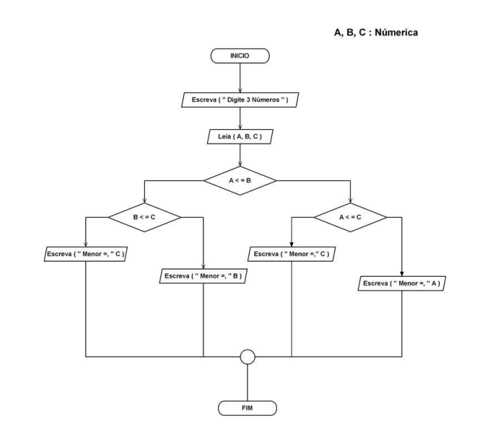

Exemplo de C
Exemplo da Esquerda - Desenvolver um algoritmo que leia um número inteiro e verifique se o número é divisível por 5 e por 3 ao mesmo tempo.
Exemplo da Direita - Desenvolver um algoritmo para ler o número de uma sala de aula, sua capacidade e o total de alunos matriculados na mesma e imprimir uma linha mostrando o número da sala, sua capacidade, o número de cadeiras ocupadas e sua disponibilidade indicando se a sala está lotada ou não.
Exercícios Printf
Utilizando o Dev C++ faça os seguintes programas a baixo:
Faça um programa que peça o nome do usuário e imprima na tela:
Faça um programa que solicita a altura e imprima na tela:
Faça um programa que solicita a idade e imprima na tela:
Faça um programa que transforma um número ímpar em par.
Exemplos Fluxogramas
Esquerda - Desenvolva um algoritmo capaz e encontrar o menor dentre 3 números inteiros quaisquer dados pelo teclado.
Direita - Desenvolva um algoritmo capaz de verificar se uns números inteiros, dados como entrada, é par ou impar.

Fluxogramas
Utilizando o draw.io crie os segintes fluxogramas abaixo:
Crie um fluxograma para fazer um café:
Crie um fluxograma para preparar um sanduíche:
Crie um fluxograma para atravessar a rua:
Crie um fluxograma que verifique uma senha e aprove se for correta: